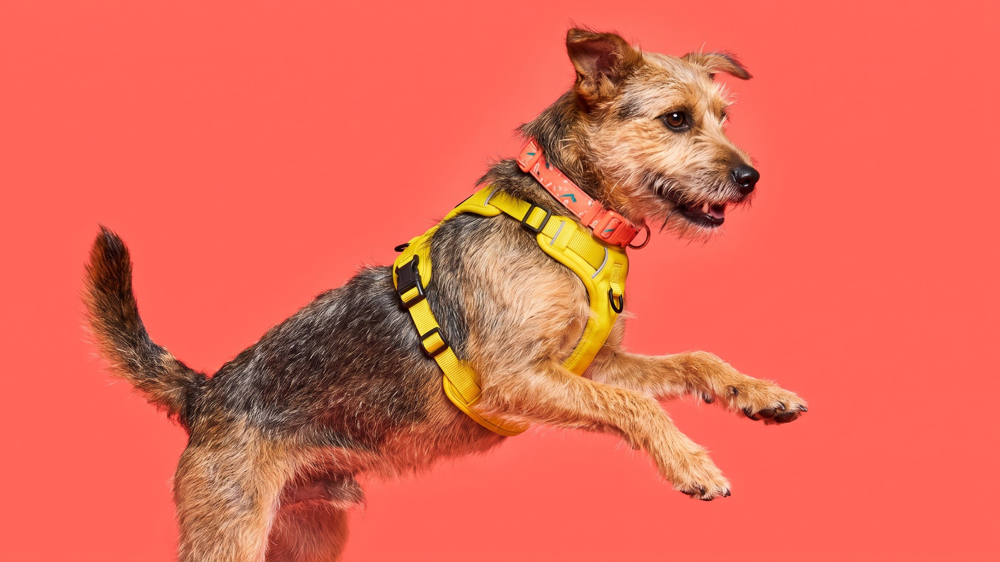

Шлейка чуть великовата, собака вывернулась из неё прямо на оживлённой улице. Такое случается чаще, чем хочется думать, и причина почти всегда одна: амуницию купили на глаз, без мерок. Ниже разберём, как снять три нужных размера, выбрать тип снаряжения под конкретную собаку и проверить посадку за пять минут прямо сегодня вечером.
🐾 Чтобы уход не держать в голове
AnimaLife напомнит, когда стричь когти, вычёсывать, купать и обрабатывать от паразитов, и заведёт дневник по вашему питомцу. Бесплатно.
Настроить напоминания → Настроить в MAX →
У вас iPhone? AnimaLife есть в App Store
Оба варианта рабочие, выбор зависит от того, как ведёт себя собака на поводке и как устроена её шея.
Ошейник подходит хорошо воспитанным собакам без привычки тянуть. Натяжение поводка давит на трахею и шейный отдел позвоночника, поэтому собакам, которые постоянно рвутся вперёд, ошейник лучше не оставлять единственным решением.
Шлейку стоит выбрать, если собака тянет, если у неё короткая широкая шея (мопсы, бульдоги, французские бульдоги), если она маленькая или с тонкой шеей. Давление распределяется на грудь и корпус, а не на шею. Трахея и позвонки не страдают при рывках.
Имейте в виду: шлейки с кольцом на спине могут поощрять тягу, потому что собаке удобно наваливаться корпусом. Шлейки с кольцом на груди (Y-образные или с передней точкой крепления) дают лучший контроль без давления на горло.
Нужны три числа. Лента-сантиметр или верёвка с линейкой.
К полученным цифрам прибавьте 3–4 сантиметра при выборе размера по таблице производителя: это запас на шерсть и на рост, если речь о щенке.
Просуньте два пальца между лямкой и телом собаки. Два пальца проходят свободно, но без лишнего зазора: посадка правильная. Пальцы не пролезают: слишком туго, нужно ослабить. Четыре пальца входят легко: слишком свободно, собака может выскочить.
Правило работает и для ошейника, и для каждой лямки шлейки: проверяйте боковые лямки и нагрудную часть отдельно.
Зимой проверяйте посадку поверх одежды. Комбинезон или попона добавляют объём, и шлейка, которая сидела идеально летом, зимой может оказаться чрезмерно тугой.
Смотрите на собаку после прогулки и между прогулками:
Если что-то из этого есть, снимите амуницию, осмотрите кожу и скорректируйте посадку. Не откладывайте: натёртости при ежедневных прогулках нарастают быстро.
Взрослой собаке хватает проверки раз в месяц и обязательно при смене сезона: летняя амуниция на зимнюю одежду часто не налезает. Щенку перемеряйте обхват груди и шеи каждые 2–3 недели: он растёт быстро, и шлейка, купленная три недели назад, может уже давить.
Если после прогулки вы заметили натёртости, залысины или ранки в местах контакта с амуницией, обсудите это с ветеринаром: врач оценит состояние кожи и подскажет, нужен ли уход за повреждениями. Кашель или осипший голос при натяжении поводка, которые не проходят после смены амуниции, тоже стоит обсудить с ветеринаром.
Материал носит информационный характер и не заменяет очную консультацию ветеринара.
🐾 Заведите дневник ухода за собакой
Вес, шерсть, обработки, прививки — всё в одном месте. А если что-то смущает, AI-ветеринар ответит круглосуточно и бесплатно.
Завести дневник → Завести в MAX →
У вас iPhone? AnimaLife есть в App Store
🐾 Понравился разбор?
Подпишитесь на канал — каждый день разбираем по одному тревожному симптому у кошек и собак: что в пределах нормы, а когда пора к врачу. Подпишитесь, чтобы не пропустить разбор, который может спасти здоровье вашего питомца.